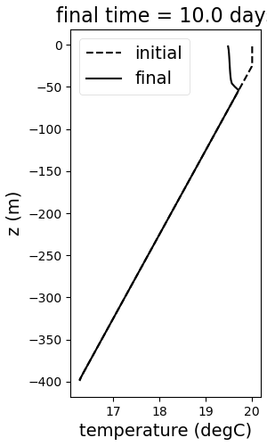
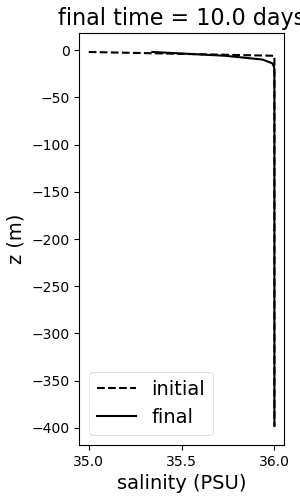
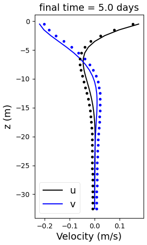
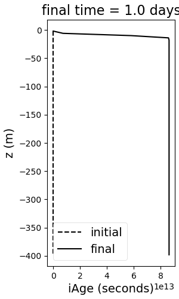
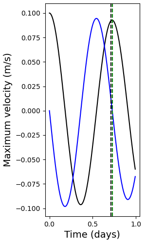

single column
description
The single column tests in polaris.tasks.ocean.single_column exercise
the vertical dynamics of the ocean model only. The test cases are:
Testing the vertical mixing library, CVMix, under surface forcing
Testing the Ekman solution under wind forcing
Testing the Ideal Age tracer under surface forcing
Testing the Coriolis term by quantifying the inertial frequency
suppported models
These tasks support only MPAS-Ocean.
mesh
The mesh is planar and spans the minimum number of cells (16 for MPAS-Ocean).
The config options lx and ly are given arbitrarily small values of 1 m in
order to ensure that the minimum number of cells is chosen.
By virtue of testing the vertical dynamics, these tests should be insensitive to the horizontal resolution. As such, only 960 m horizontal resolution is currently supported.
vertical grid
Currently, these tests feature a very fine vertical resolution of 4 m with 100 vertical levels.
config options
# Options related to the vertical grid
[vertical_grid]
# the type of vertical grid
grid_type = uniform
# Number of vertical levels
vert_levels = 100
# Depth of the bottom of the ocean
bottom_depth = 400.0
# The type of vertical coordinate (e.g. z-level, z-star)
coord_type = z-star
# Whether to use "partial" or "full", or "None" to not alter the topography
partial_cell_type = None
# The minimum fraction of a layer for partial cells
min_pc_fraction = 0.1
initial conditions
The temperature and salinity profiles are defined using the following equations:
where \(\Phi_0 = \)surface_X, \({d\Phi/dz}_{ML} = \)X_gradient_mixed_layer,
\(z_{MLD} = -\)mixed_layer_depth_X, \({\Delta\Phi}_{ML} = \)
X_difference_across_mixed_layer, and \({d\Phi/dz}_{int} = \)
X_gradient_interior. X in the config options above is either temperature
or salinity.
The initial velocity is vertically uniform and given by
single_column:zonal_velocity and single_column:meridional_velocity, which
are 0 by default (at rest).
The Coriolis parameter is spatially constant and set equal to
coriolis_parameter.
forcing
Default values of no forcing are given here, which are then overwritten by the
config options for various test cases. The rates for surface restoring are also
given here, but are only used when the namelist options in forward.yaml turn
surface restoring on.
# config options for forcing single column testcases
[single_column_forcing]
# Piston velocity to control rate of restoring toward temperature_surface_restoring_value
temperature_piston_velocity = 4.0e-6
# Piston velocity to control rate of restoring toward salinity_surface_restoring_value
salinity_piston_velocity = 4.0e-6
# Temperature to restore towards when surface restoring is turned on
temperature_surface_restoring_value = ${single_column:surface_temperature}
# Salinity to restore towards when surface restoring is turned on
salinity_surface_restoring_value = ${single_column:surface_salinity}
# Rate at which temperature is restored toward the initial condition
temperature_interior_restoring_rate = 1.0e-6
# Rate at which salinity is restored toward the initial condition
salinity_interior_restoring_rate = 1.0e-6
# Net latent heat flux applied when bulk forcing is used. Positive values indicate a net
# input of heat to ocean
latent_heat_flux = 0.0
# Net sensible heat flux applied when bulk forcing is used. Positive values indicate a
# net input of heat to ocean
sensible_heat_flux = 0.0
# Net solar shortwave heat flux applied when bulk forcing is used. Positive values
# indicate a net input of heat to ocean
shortwave_heat_flux = 0.0
# Net surface evaporation when bulk forcing is used. Positive values indicate a net
# input of water to ocean
evaporation_flux = 0.0
# Net surface rain flux when bulk forcing is used. Positive values indicate a net input
# of water to ocean
rain_flux = 0.0
# Net surface river runoff flux when bulk forcing is used. Positive values indicate a net
#flux of water to ocean
river_runoff_flux = 0.0
# Net surface subglacial runoff flux when bulk forcing is used. Positive values indicate a net
#flux of water to ocean
subglacial_runoff_flux = 0.0
# Net surface ice runoff flux when bulk forcing is used. Positive values indicate a net
#flux of water to ocean
ice_runoff_flux = 0.0
# Net iceberg freshwater flux when bulk forcing is used. Positive values indicate a net
#flux of water to ocean
iceberg_flux = 0.0
# Zonal surface wind stress over the domain
wind_stress_zonal = 0.0
# Meridional surface wind stress over the domain
wind_stress_meridional = 0.0
config options
# config options for single column testcases
[single_column]
# size of the domain (typically the minimum allowed size of 4x4 cells)
nx = 4
ny = 4
# resolution in km
resolution = 960.0
# Surface temperature
surface_temperature = 20.0
# Temperature gradient in the mixed layer in degC/m
temperature_gradient_mixed_layer = 0.0
# The temperature below the mixed layer
temperature_difference_across_mixed_layer = 0.0
# Temperature gradient below the mixed layer
temperature_gradient_interior = 0.0
# Depth of the temperature mixed layer
mixed_layer_depth_temperature = 0.0
# Surface salinity
surface_salinity = 35.0
# Salinity gradient in the mixed layer in PSU/m
salinity_gradient_mixed_layer = 0.0
# The salinity below the mixed layer
salinity_difference_across_mixed_layer = 0.0
# Salinity gradient below the mixed layer
salinity_gradient_interior = 0.0
# Depth of the salinity mixed layer
mixed_layer_depth_salinity = 0.0
# coriolis parameter
coriolis_parameter = 1.0e-4
See mesh section for a description of lx and ly and initial conditions section for a description of the remaining config options.
time step and run duration
The time step is given as 10 min and the barotropic time step is 30s in
forward.yaml. The run duration is given in the forward.yaml file for each
test case. Both can be changed after set-up by modifying the namelist file.
cores
Both default and minimum number of cores are hard-coded as 1 given that the domain is only 16 cells.
cvmix
description
The cvmix test exercises the CVMix
schemes for vertical mixing.
The temperature and salinity profiles after 10 days are shown here:
 {kind=link}
{kind=link}
The namelist options for this test case dictate that the KPP scheme is tested.
mesh
See single column.
vertical grid
See single column.
initial conditions
These config options overwrite those in single column:
# config options for single column testcases
[single_column]
# Temperature gradient below the mixed layer
temperature_gradient_interior = 0.01
# Depth of the temperature mixed layer
mixed_layer_depth_temperature = 25.0
# The salinity below the mixed layer
salinity_difference_across_mixed_layer = 1.0
The rest of the config options are given in single column.
forcing
# config options for forcing single column testcases
[single_column_forcing]
# Net latent heat flux applied when bulk forcing is used. Positive values indicate a net
# input of heat to ocean
latent_heat_flux = -50.0
# Net sensible heat flux applied when bulk forcing is used. Positive values indicate a
# net input of heat to ocean
sensible_heat_flux = -25.0
# Net solar shortwave heat flux applied when bulk forcing is used. Positive values
# indicate a net input of heat to ocean
shortwave_heat_flux = 200.0
# Net surface evaporation when bulk forcing is used. Positive values indicate a net
# input of water to ocean
evaporation_flux = 6.5E-4
# Zonal surface wind stress over the domain
wind_stress_zonal = 0.1
The cvmix case has both surface forcing and restoring, which are controlled by the config options given in single column.
time step and run duration
The time step is given in single column. The run duration is 10 days.
config options
See single column. Currently, config options are only given in the shared framework.
cores
See single column.
ekman
description
The ekman test compares the modeled Ekman boundary layer with a wind-forced
analytic solution
The modeled and analytic solutions for MPAS-Ocean with the default settings are:
{kind=link}
mesh
See single column.
vertical grid
The vertical extent is chosen so that the bottom of the domain is below O(10) Ekman depths.
[vertical_grid]
# Bottom depth
bottom_depth = 100.
The rest of the vertical grid features follow single column.
initial conditions
The temperature and salinity are constant and the flow is at rest. See single column.
forcing
The only forcing is surface wind stress, which is controlled by the following config option:
# config options for forcing single column testcases
[single_column_forcing]
# Zonal surface wind stress over the domain
wind_stress_zonal = 0.1
time step and run duration
The time step is given in single column. The run duration is 5 days.
config options
[single_column_ekman]
The only config option specific to this test case is a constant vertical viscosity:
# Constant vertical eddy diffusivity
vertical_viscosity = 1.e-3
All other config options derive from single column.
cores
See single column.
ideal age
The ideal age test exercises the ideal age tracers.
description
Temperature and salinity profiles evolve in the same way as in the cvmix test case. 10-day profiles for the ideal age tracer are as follows:
{kind=link}
mesh
See single column.
vertical grid
See single column.
initial conditions
idealAgeTracers is initialized as zero seconds throughout the water column.
forcing
idealAgeTracers is set to zero seconds within the first surface grid layer at
every time step.
time step and run duration
The time step is given in single column. The run duration is 10 days.
config options
See single column. Currently, config options are only given in the shared framework.
cores
See single column.
inertial
description
The inertial test compares the modeled inertial frequency with the
exact inertial frequency.
The case should be configured to have the lowest possible friction.
The modeled velocity time series for MPAS-Ocean with the default settings is:
{kind=link}
where the black vertical line shows the modeled period and the green vertical line shows the theoretical solution.
mesh
See single column.
vertical grid
See single column.
initial conditions
The temperature, salinity, and velocity are constant.
# config options for single column testcases
[single_column]
# Initial zonal velocity
zonal_velocity = 0.1
All other config options are given by single column.
forcing
N/A
time step and run duration
The time step is given in single column. The run duration is 10 days.
config options
The config option specific to this test case is the condition for failure:
[single_column_inertial]
# The fractional difference in inertial period that is tolerated before the test case fails
period_tolerance_fraction = 0.05
All config options shown in single column are also used.
cores
See single column.